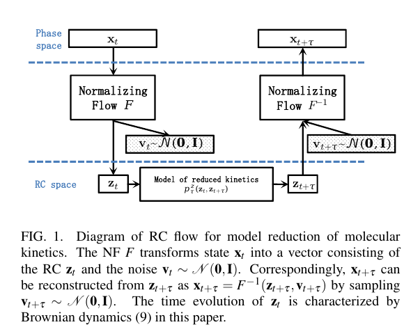
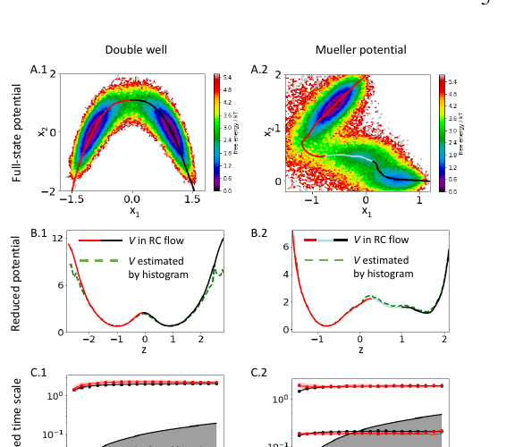

Reading · Dynamical Model Reduction
好的“市场压力坐标”应保存什么未来信息？
01. 反应坐标是未来的充分统计量
论文把高维状态 xₜ 看作 Markov 过程，动力学由时间滞后转移密度描述。理想反应坐标 zₜ = Φ(xₜ) 不以“解释多少当期方差”为标准，而以“保留多少预测 xₜ₊τ 的信息”为标准。这是它与 PCA 最根本的区别。
02. 把动力学信息与剩余自由度分开

Normalizing Flow 将 xₜ 映射为 (zₜ, vₜ)。zₜ 承载可预测动力学，vₜ 被建模为对未来无信息的标准高斯噪声。可逆性使模型能从低维转移重新构造高维条件分布，而不是只得到一个不可逆的压缩向量。
03. 两类损失分别约束过程与静态分布
- Kinetic loss：对时间滞后转移对 (xₜ, xₜ₊τ) 的负对数似然，要求低维坐标保留未来转移。
- Equilibrium loss：对稳态样本的负对数似然，要求重构后的静态分布正确。
这种拆分与“sampling versus simulation”相呼应：静态密度和转移动力学是两个不同的验收对象。
04. 好坐标应保留亚稳态与慢时间尺度

在可逆、平稳的 Brownian 动力学中，转移过程可分解为若干松弛模式。若存在谱隙，最大的几个 implied timescales 控制长期演化。一个合格的反应坐标应保留这些模式，而不只是重构当期状态。
05. 翻译成市场压力坐标
好的市场压力坐标应预测未来流动性盆地、冲击恢复时间、跨资产传播和制度切换。普通 PCA 最大化同时点方差，可能遗漏低方差但慢且有预测力的方向；当期波动率也无法区分“压力仍在积累”与“同样波动但已经修复”的状态。
可执行比较
以 PCA、当期波动率和手工压力指数为基线，用时间滞后状态对学习动力学坐标；比较下一制度预测、冲击半衰期、implied timescales 和跨窗口稳定性。
06. 市场中容易失效的假设
- 平稳
- 制度变化、宏观周期与参与者进入退出会改变稳态。
- 无外力
- 新闻、政策、熔断和强平应作为条件冲击显式建模。
- 时间可逆
- 信息到达、撮合耗散和杠杆瀑布具有明确时间箭头。
- Markov
- 代理记忆、隐藏库存和长期订单拆分要求扩展状态。
- Brownian
- 跳跃、厚尾和离散制度切换需要更一般的低维动力学。
因此应吸收“保留未来信息”的目标，而不是把分子系统的平衡、可逆和布朗假设直接移植到市场。